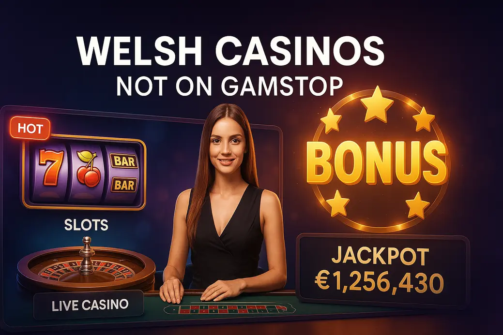

Last Updated: 1 October 2026 | Verified by iGaming experts
Welsh casinos not on GamStop are offshore gambling sites that accept players from Wales and the wider UK, but do not connect to the UK’s national self-exclusion scheme. The short version: they offer bigger bonuses, crypto banking, and fewer account restrictions, but the safety net is thinner. If you are self-excluded or chasing losses, skip them. If you simply want to compare a Welsh casino not on GamStop with UKGC sites, read the small print like a hawk.
The best Welsh casinos not on GamStop are not Welsh-licensed, because Wales follows the wider UK gambling framework. What people mean by the phrase is simple enough: casino sites accepting Welsh players without plugging into GamStop. That difference matters. You get more flexibility, but you give up the direct UKGC complaints route.
For a quick shortlist, I’d judge any site on four things before the welcome bonus: licence number in the footer, withdrawal rules, max cashout on bonuses, and whether live chat answers a real question without copy-paste waffle. A £1,000 bonus means damn all if the casino caps bonus winnings at £200 or blocks withdrawals because your ID photo has a shadow on it.
Non-GamStop casino options in Wales sit in a grey-feeling space for players, even when the operator itself holds an overseas licence. They are legal for adult players to visit, but they are not regulated by the UK Gambling Commission. Honestly, that is the whole trade-off in one sentence.
The upside is obvious: bigger welcome packages, fewer affordability pop-ups, broader sportsbook markets, crypto withdrawals, and slot catalogues with studios that UKGC sites have trimmed back. The downside is just as real. Dispute handling depends on the offshore regulator and the casino’s own process, not the UKGC. If a bonus term bites you, support will point to the clause and move on.
Welsh players also need to remember currency. Some platforms list balances in GBP, while others use EUR or crypto units. A £50 bankroll turns messy if the site converts deposits twice or sets minimum withdrawals in euros. That tiny cashier detail can shave value off a session before the first spin lands.
FatPirate has the kind of branding that screams casual fun, and the lobby usually leans into slots, live tables, and bonus-heavy promos. For Welsh players, the appeal is the easy layout: new games, jackpot titles, Megaways releases, and live dealer rooms are not buried five taps deep. That matters on mobile when you just want to find Gates of Olympus 1000, not fight the menu.
The stronger side is variety. Pragmatic Play, BGaming, and Evolution-style live tables are the sort of mix players look for, with high-volatility titles like Sweet Bonanza 1000 and Book of Dead sitting beside lower-stress games such as Starburst. Trade-off: FatPirate-style platforms can push large bonuses with max bet clauses. If the bonus max bet is £5 and you fire £6.25 spins, your winnings can be voided. Bloody annoying, but common.
Gransino feels more like a casino-first betting hub than a tiny offshore skin. The useful detail is navigation: strong categories, provider filters, and a cashier that separates deposit methods clearly. Welsh players switching from UKGC brands will notice fewer friction checks, but that should not be treated as a green light to overspend.
Slot coverage is the selling point. Big Bass Bonanza has high volatility and a published RTP near 96.71% in its common version, but its bonus hunt can eat bankroll fast; Lightning Roulette runs with a 97.30% RTP on straight roulette outcomes before multipliers, yet volatility jumps when players chase the big 500x hits. Gransino’s weakness is promotional noise. Reloads, missions, and tournaments look exciting, but wagering can stack up fast if you opt into everything.
Memo is the kind of global platform that appeals to players who want a tidy account area and fewer distractions. The lobby tends to be easier to read than the loudest crypto casinos, and that helps if you play short sessions on lunch breaks or train journeys across South Wales. A decent filter system should let you sort by provider, game type, and new releases without reloading the whole page.
The gaming mix usually suits slot fans first. Think Wolf Gold with medium volatility and 96.01% RTP in its standard version, plus live blackjack tables where side bets add risk fast. Memo’s trade-off is depth. It can feel less stacked than huge international casinos, especially for niche studios and crash games. If you want 7,000 titles and every oddball provider under the sun, Memo may feel too neat.
Vegas Plus has the classic big-casino feel: bright lobby, heavy live casino push, and lots of “new player” messaging. The useful bit for Welsh players is whether it handles GBP smoothly. A site that shows GBP in the balance, bonus, and withdrawal screen removes a lot of mental maths. A site that flips to EUR at cashout is a pain.
Game-wise, Vegas Plus-style casinos often do well with live roulette, blackjack, baccarat, and game shows. Crazy Time has a theoretical RTP of 96.08%, but it is volatile because bonus rounds drive much of the excitement; Monopoly Live carries a similar entertainment pull, with the trade-off that long dead stretches feel brutal. Vegas Plus’s own weakness is that the lobby can become promo-heavy. If pop-ups cover the cashier, that is not premium design, it is clutter.
Casino Lab is familiar to many UK players, and its name comes up because it has operated in the UK market rather than as a pure offshore unknown. That history gives it brand recognition, but players still need to check the current terms, licence position, and whether the specific version they visit is UKGC-linked or outside GamStop. Do not assume based on the logo alone.
The strong point is a polished casino feel: clean slot pages, recognisable providers, and straightforward categories. Games like Gonzo’s Quest offer medium volatility with a 95.97% RTP in the classic NetEnt version, while Dead or Alive 2 is famously savage high volatility despite its loyal fanbase. Casino Lab’s trade-off is that regulated versions can feel more restrictive, while non-GamStop alternatives under similar branding demand extra licence checks. Brand comfort is useful, not a substitute for due diligence.
The essential features are less glamorous than bonus banners, but they save money. A serious non-GamStop casino should have visible licensing details, clear withdrawal caps, game provider names, SSL encryption, accessible safer gambling tools, and support that answers account-specific questions. If support cannot explain the max withdrawal per day, leave before depositing.
Welsh casinos beyond GamStop also need a workable mobile site. Not “it loads eventually” workable. I mean the login button is thumb-friendly, the game opens without forcing ten redirects, and the balance updates after a win without needing a refresh. Offshore casinos that ignore mobile UX feel cheap fast, especially on iPhone Safari where pop-up cashier windows can misbehave.
A broad game library is more than a big number. You want genuine provider depth. Pragmatic Play brings bonus-buy slots such as Gates of Olympus, though bonus buys are dangerous for bankroll control because one click can equal 100 spins. Play’n GO adds Book of Dead, a high-volatility classic where dead base-game spells are part of the deal. NetEnt brings polished old-school titles, but many of its classics have lower excitement if you chase huge multipliers.
Live casino matters too. Evolution blackjack offers slick dealing and fast rounds, but side bets like 21+3 carry a bigger house edge than main blackjack. Pragmatic live roulette is easy to use, but multiplier games turn sensible staking into lottery chasing if you let them. The smart move is to filter games by volatility and RTP where the site allows it. If a casino hides RTP info completely, that is a weak sign.
Exclusive welcome offers are the shiny hook. Welsh players will see deposit matches, free spins, cashback, crypto reloads, and VIP ladders. The best offer is not the biggest headline number. It is the one with fair wagering, a sensible max bet, no tiny max cashout, and enough expiry time to play without rushing.
Example: a 100% bonus up to £200 with 35x wagering on bonus funds is far cleaner than a 400% bonus with 50x on deposit plus bonus. The second one looks massive, then traps you in a grind. Free spins also need checking. Ten spins on Big Bass Splash are fine, but if winnings convert to a bonus with 40x wagering, the “free” part is doing a lot of work.
Banking is where non-GamStop casinos either earn trust or lose it. Welsh players usually look for card deposits, e-wallet-style options, bank transfer, vouchers, and crypto. The cashier should show minimum deposit, minimum withdrawal, fees, processing time, and KYC triggers before you commit funds.
Crypto is the fastest route when it works well. A Bitcoin withdrawal landed in 6 hours during a clean test cashout on one crypto-friendly platform, which is miles better than waiting three working days. Still, crypto has its own downside: network fees, price swings, and zero chargeback comfort. If you send coins to the wrong address, that money is gone.
Cards feel familiar, but offshore card withdrawals are less consistent. Some casinos accept Visa deposits then force bank transfer or crypto for withdrawals. That is not automatically dodgy, but it needs to be stated clearly. Bank transfer suits larger cashouts, with the trade-off of slower checks and stricter name matching. The account name, casino profile, and bank details must line up exactly.
| Method | Best for | Watch out for |
|---|---|---|
| Debit card | Simple GBP deposits | Withdrawal route may change after KYC |
| Bitcoin / USDT | Fast withdrawals and privacy-conscious banking | Wallet errors, fees, and exchange-rate movement |
| Bank transfer | Larger withdrawals | Longer checks and strict name matching |
Security is not sexy, but it is the section that matters most. Welsh independent casinos should protect logins with SSL encryption, verify identity before large withdrawals, and publish game fairness information. If a site treats KYC like a surprise punishment only after you win, that is poor practice. Good casinos tell you the document requirements upfront.
Mobile security deserves a proper mention because most players deposit from a phone. On a good site, touch targets are big enough that you do not tap “max bet” by accident, the cashier fields accept password-manager autofill, and screen rotation does not reload your live dealer table. On weak sites, the spin button is a menace on mobile: too close to bet-size controls, tiny confirm buttons, and pop-ups that cover the balance.
4G versus Wi-Fi also changes the experience. Slots from Pragmatic Play and Play’n GO usually recover cleanly after a short signal drop, but live casino streams are harsher. If your 4G dips during Lightning Roulette, the bet window can close before the chip registers. Use Wi-Fi for live tables and bonus buys. For slots, test with 20p spins first; if the game stutters or the balance lags, do not raise stakes. Simple, but it saves arguments with support.
Licensing is the first trust filter. Non-GamStop casinos serving Wales often use regulators such as Curaçao or other offshore jurisdictions. A licence does not equal UKGC-level protection, but no visible licence is worse. Click the licence seal, check the company name, and compare it with the terms page. If the footer says one company and the terms name another with no explanation, that is a headache waiting to happen.
The practical detail: take a screenshot of the licence footer and bonus terms before depositing. Sounds dull, yes. It gives you evidence if a term changes mid-promotion. Proper operators keep dated terms; weaker ones quietly edit pages and act like nothing happened.
Third-party audits prove games are not being made up on the fly. Look for testing names such as iTech Labs, GLI, eCOGRA, or provider-level certifications from studios. The casino itself does not set the RTP on Book of Dead or Wolf Gold; the provider version does. That is why you should open the game info panel and check the RTP inside the slot, not only on a review page.
One concrete example: Pragmatic Play games often show RTP in the help file, and some titles have multiple RTP settings across operators. Gates of Olympus can appear in versions below the famous 96.50% model. The trade-off with audited games is that fair does not mean gentle. High volatility still rinses a careless bankroll.
Data protection starts with HTTPS, but it does not end there. A good casino uses encrypted cashier pages, masks card details, supports strong passwords, and logs out inactive sessions. If your browser warns you about a certificate issue, close the tab. No bonus is worth sending ID documents through a dodgy page.
On mobile, check whether the site lets you paste from a password manager. Some clunky casinos block paste in password fields, which pushes players toward weak passwords. That is bad design. Also check file uploads for KYC. The best pages accept JPG, PNG, and PDF, show upload progress, and confirm receipt. Weak pages fail silently, then support asks you to upload the same passport three times. Infuriating.
Responsible gambling tools are non-negotiable, even outside GamStop. Look for deposit limits, loss limits, wager limits, time-outs, reality checks, and self-exclusion at site level. These tools should be easy to find from the account menu, not hidden under five footer links.
Set limits before the first deposit. Not after a bad run. If your bankroll is £100, splitting it into four £25 sessions beats firing the whole amount into bonus buys. Bonus buys on slots like Sweet Bonanza 1000 are especially dangerous because the cost jumps fast and the feature can still pay poorly. The game being fair does not stop a cold streak from hurting.
Regulations and licensing standards decide what happens when things go wrong. UKGC casinos must follow strict rules on advertising, safer gambling, fund segregation, and complaints. Offshore casinos follow the rules of their own licensing body. That can still include AML checks and fairness controls, but the enforcement style is different.
The useful move is to read the complaints route before you need it. Does the casino list an ADR body, regulator contact, or formal complaints email? Does it give a timeline for responses? A site that only says “contact support” is weaker than one that explains escalation in plain English. Also check dormant account fees. Some offshore terms deduct funds after inactivity, and players miss that clause until their balance shrinks.
Non-GamStop sites are not the only route for Welsh players who feel boxed in by mainstream brands. If the goal is more control, safer structure, or just a fresh experience, there are cleaner choices. UKGC-licensed casinos still offer strong slots, live dealer games, and withdrawals with a familiar complaints process. They also connect to GamStop, which is essential if you need hard barriers.
Sports bettors can use UKGC bookmakers with strict deposit limits. Bingo fans can pick licensed bingo rooms with slower gameplay, which helps if slots feel too rapid. Lottery-style instant win games exist too, although their RTP can be lower than proper slots. The trade-off is pacing: slower products reduce impulse betting, but they do not remove risk.
Another sensible option is free-play mode. Demo slots let you test volatility without burning cash. Try 100 demo spins on Big Bass Bonanza, then look at the balance swings. If the fake-money session annoys you, real-money play will feel worse. By the way, that is a brilliant filter for bonus-buy temptation too: if a demo feature pays 12x after costing 100x, remember that feeling before clicking buy with real funds.
For mobile-first players, app-like UKGC sites often beat offshore casinos on polish. Better touch spacing, smoother portrait mode, cleaner payment authentication, and fewer browser pop-ups make a real difference. Offshore sites win on flexibility; regulated brands win on consistency. On a train between Cardiff and Swansea, that consistency matters. Patchy 4G plus a clumsy live casino interface is a recipe for missed bets and stress.
The final answer is not “offshore good” or “offshore bad”. Welsh casinos not on GamStop suit a narrow type of player: experienced, limit-led, comfortable reading terms, and not self-excluded. If that is not you, stick with UKGC sites or take a break. Gambling should be entertainment, not a damn recovery mission.